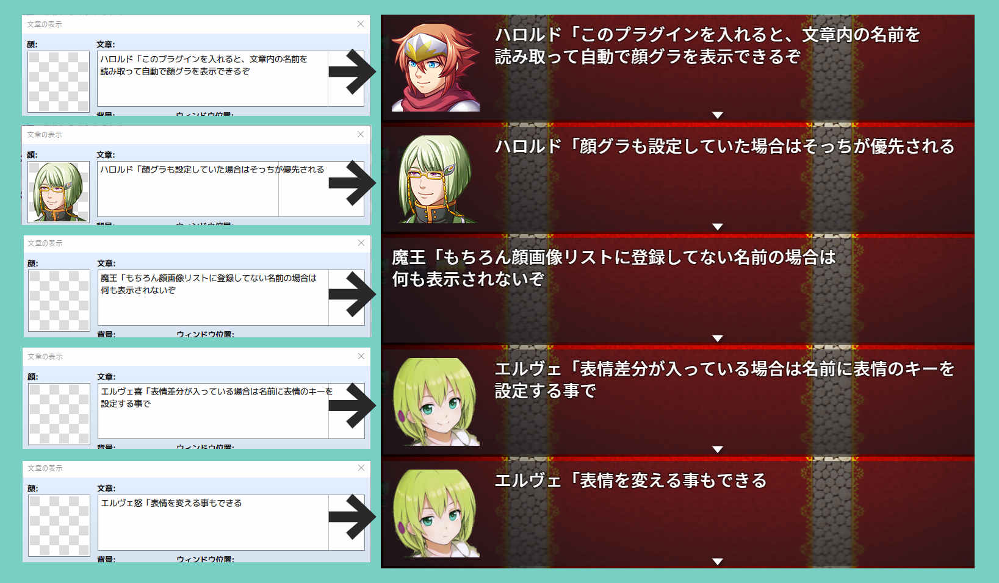

//=============================================================================
// NAPI_AutoFaceGraphic.js
//=============================================================================
// Copyright (c) 2021 napiiey
// Released under the MIT license
// https://opensource.org/licenses/mit-license.php
//-----------------------------------------------------------------------------
// version
// 2.0.0 2021/12/26 MZ対応 文章内の名前をMZの名前枠に表示する機能を追加
// 1.1.1 2021/11/24 名前の一部が一致したキャラが一致した扱いになってしまう不具合を修正
// 1.1.0 2021/11/22 プラグイン無効化スイッチの追加
// 1.0.0 2021/11/22 公開
//-----------------------------------------------------------------------------
// Twitter: @napiiey
//-----------------------------------------------------------------------------
/*:
* @target MV MZ
* @plugindesc 顔グラ自動表示プラグイン
* @author なぴぃ
*
* @help 文章の表示で文章に含まれた名前に応じて自動で顔画像を表示します。
* 表情キーを設定する事で表情も指定できます。
* MZの場合文章内に書いた名前を名前枠に移す事ができます。

*
* ●使い方
* 顔画像リストで呼び出したい画像を設定します。
* 文章の表示コマンドで
*
* 名前「本文
*
* の形式で入力します。
*
* 例）
* ハロルド「自動で画像を表示するぞ！
*
* すると名前に対応した画像が自動で表示されます。
*
*
* ●表情の変更
* 表情差分を含んだ画像を顔画像リストで登録します。
* 表情キーリストで表情を呼び出すキーとなる文字を設定します。
*
* 名前 表情キー「本文
*
* の形式で入力します。
*
* 例）
* ハロルド怒「自動で"怒"キーを設定したインデックスの画像を表示するぞ！
*
* プレイ時には表情キーは表示されず以下のように表示されます。
*
* ハロルド「自動で"怒"キーを設定したインデックスの画像を表示するぞ！
*
*
* ●スクリプト等で利用できる情報（上級者向け）
* 文章の表示並列コモンスイッチプラグイン等を使ったコモンイベントで利用できる情報です。
*
* NAPI.afgFaceImage 顔画像のファイル名
* NAPI.afgFaceIndex 顔画像のインデックス
* NAPI.afgBackground ウィンドウ背景（0.ウィンドウ 1.暗くする 2.透明）
* NAPI.afgPositionType ウィンドウの位置（0.上 1.中 2.下）
* NAPI.afgName 名前
* NAPI.afgSpeakerName MZの名前ウィンドウに表示される名前（MZで名前表示欄に表示をONにした場合のみ利用できます）
*
* 文章の表示並列コモンスイッチプラグインと併用する場合はこのプラグインを上にして下さい。
*
*
* ●ご利用について
* 本プラグインはMITライセンスの下で公開しています。
* MITライセンスの内容に従ってご利用下さい。
* https://napiiey.github.io/plugins/license.html
*